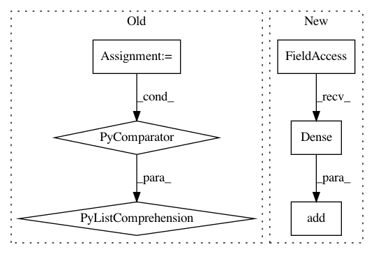

7272af90d4f5916f61f8bc5660e5605e730bbd78,examples/securenn/network_d.py,ModelTrainer,build_training_graph,#ModelTrainer#Any#,97
Before Change
self.KERNEL,
self.IN_CHANNELS,
self.HIDDEN_CHANNELS], 1.)
bconv1 = bias_variable([1, 1, self.HIDDEN_CHANNELS])
wfc1 = weight_variable([self.HIDDEN_FC1, self.HIDDEN_FC2], 1.)
bfc1 = bias_variable([self.HIDDEN_FC2])
wfc2 = weight_variable([self.HIDDEN_FC2, self.OUT_N], 1.)
bfc2 = bias_variable([self.OUT_N])
params = [wconv1, bconv1, wfc1, bfc1, wfc2, bfc2]
// optimizer and data pipeline
optimizer = tf.train.AdamOptimizer(learning_rate=self.LEARNING_RATE)
// training loop
def loop_body(i: tf.Tensor,
max_iter: tf.Tensor,
nb_epochs: tf.Tensor,
avg_loss: tf.Tensor) -> Tuple[tf.Tensor, tf.Tensor]:
Main model training loop.
// get next batch
x, y = training_data.get_next()
// model construction
x = tf.reshape(x, [-1, self.IN_DIM, self.IN_DIM, 1])
layer1 = pooling(tf.nn.relu(conv2d(x, Wconv1, self.STRIDE) + bconv1))
layer1 = tf.reshape(layer1, [-1, self.HIDDEN_FC1])
layer2 = tf.nn.relu(tf.matmul(layer1, Wfc1) + bfc1)
logits = tf.matmul(layer2, Wfc2) + bfc2
loss = tf.reduce_mean(
tf.losses.sparse_softmax_cross_entropy(logits=logits, labels=y))
is_end_epoch = tf.equal(i % max_iter, 0)
def true_fn() -> tf.Tensor:
return loss
def false_fn() -> tf.Tensor:
prev_loss = tf.cast(i - 1, tf.float32) * avg_loss
return (prev_loss + loss) / tf.cast(i, tf.float32)
with tf.control_dependencies([optimizer.minimize(loss)]):
terminal_cond = tf.cond(is_end_epoch, true_fn, false_fn)
return i + 1, max_iter, nb_epochs, terminal_cond
loop, _, _, _ = tf.while_loop(
self.cond, loop_body, [0, self.ITERATIONS, self.EPOCHS, 0.])
// return model parameters after training
loop = tf.print("Training complete", loop)
with tf.control_dependencies([loop]):
return [param.read_value() for param in params]
def provide_input(self) -> List[tf.Tensor]:
with tf.name_scope("loading"):
training_data = get_data_from_tfrecord(
After Change
model.add(keras.layers.Activation("relu"))
model.add(keras.layers.AveragePooling2D())
model.add(keras.layers.Flatten())
model.add(keras.layers.Dense(self.HIDDEN_FC2))
model.add(keras.layers.Activation("relu"))
model.add(keras.layers.Dense(self.OUT_N))
// optimizer and data pipeline
In pattern: SUPERPATTERN
Frequency: 3
Non-data size: 6
Instances
Project Name: mortendahl/tf-encrypted
Commit Name: 7272af90d4f5916f61f8bc5660e5605e730bbd78
Time: 2019-07-16
Author: suriyaku@gmail.com
File Name: examples/securenn/network_d.py
Class Name: ModelTrainer
Method Name: build_training_graph
Project Name: deepchem/deepchem
Commit Name: de190ef8f5ed51aa288b877f8dda855a2d19b086
Time: 2017-04-09
Author: zqwu@stanford.edu
File Name: deepchem/molnet/run_benchmark_models.py
Class Name:
Method Name: benchmark_classification
Project Name: deepchem/deepchem
Commit Name: de190ef8f5ed51aa288b877f8dda855a2d19b086
Time: 2017-04-09
Author: zqwu@stanford.edu
File Name: deepchem/molnet/run_benchmark_models.py
Class Name:
Method Name: benchmark_regression